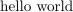

Sphinx で， HTML に LaTex を埋め込むには， texfigure という拡張を使うといい． emerge とか pip で必要なライブラリをインストール． それから， conf.py に
extensions = ['sphinxcontrib.texfigure']
と書く．そうして，たとえば，次のような hello.tex
1 2 3 4 5 6 | \documentclass{article}
\pagestyle{empty}
\begin{document}
hello world
\end{document}
|
をつくって，
.. texfigure:: hello.tex
などと書くと，次のように， PNG として HTML に 埋め込まれる．
